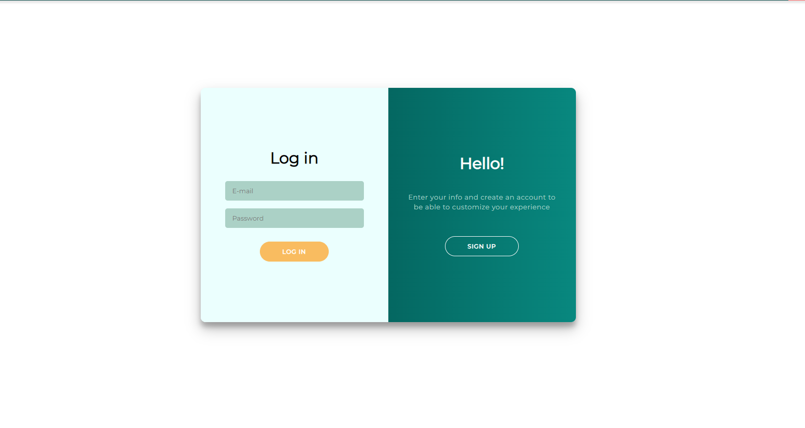
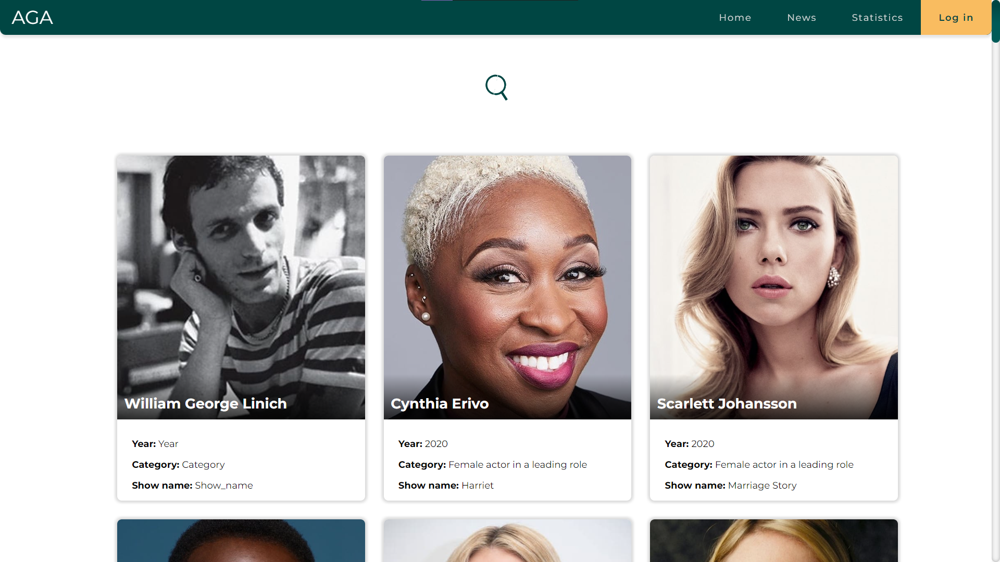
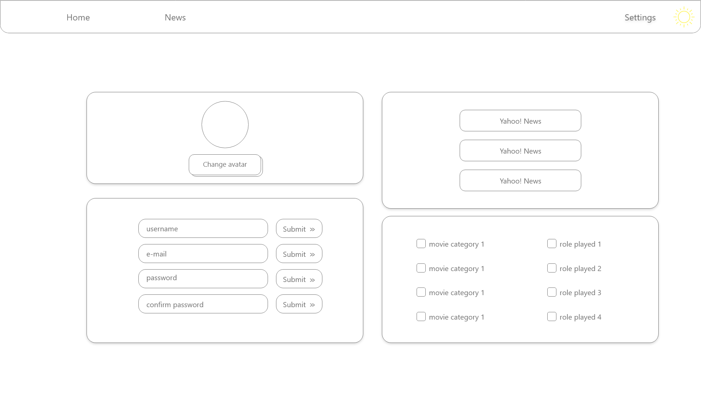
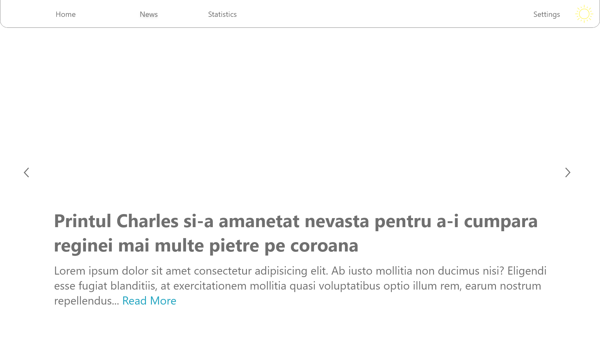
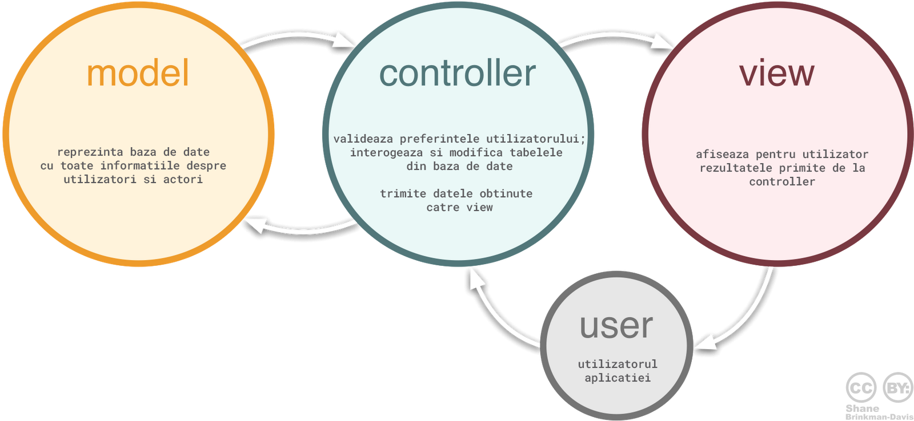

Ciuta Andrei-Calin
Ianovici Mara
Morcov-Pahoncea Razvan
Acest document cuprinde aspectele tehnice si interactiunea cu utilizatorul, ale proiectului AGA (Actors Guild Awards Visualizer), realizat in colaborare de Ciuta Andrei-Calin, Ianovici Mara, Morcov-Pahoncea Razvan pentru Tehnologii Web (2022).
Aplicatia Web AGA, detaliata in acest document, creeaza un spatiu pentru utilizator in care acesta poate grupa, vedea si gestiona datele despre actorii nominalizati la Screen Actors Guild Awards (SAG). Astfel utilizatorul poate aceesa mai rapid si mai comod subiectele sale de interes.
Aplicatia isi propune sa faca usor accesibile datele despre actori pentru un user obisnuit, date accesibile pana acum doar prin intermediul unui fisier csv, oferind o interfata intuitiva si accesibila.
Mai jos sunt functionalitatile pe care aplicatia ReDat le ofera.
Fiind o aplicatie web, ea va rula pe orice browser modern. Astfel aplcatia va putea rula pe toate sistemele de operare ce suporta un browser cum ar fi: Android, iOS, Windows, Linux, etc.
Deoarece aplicatia depinde in mod direct de API-ul oferit de TMDb, orice modificare se va propaga inclusiv in aplicatie, putand-o face nefunctionala.
Aplicatia ofera o interfata moderna, placuta din punct de vedere vizual pentru a imbunatati experienta utilizatorului. AGA poate fi folosita atat pe ecrane mari cat si pe browserul telefonului al carui ecran este de dimensiuni mai reduse, oferind in continuare o experienta placuta utilizatorului datorita design-ului responsive.
De asemenea utilizatorul are posibilitatea sa modifice tema de culori pestabilita a aplicatiei, putand opta pentru o tema intunecata; acest lucru este posibil prin icon-ul din bara de navigare.
Aplicatia este in stansa legatura cu API-ul public oferit de TMDb. La fiecare request vor fi atasate topicele si se va face o selectie bazata pe cei mai populari actori, filme cu un rating general bun.
Baza de date folosita va fi PostgreSQL deoarece se poate integra usor cu limbajul de programare pentru partea de backend. Un alt motiv fiind suportul gratuit pe platforma Heroku, locul unde va fi hostat backend-ul aplicatiei.
Pentru hostarea partii de frontend se va folosi platforma oferita de Google si anume Firebase. Aceasta este foarte usor de folsoit si este gratuita oferind posibiliatea adaugarii unui domeniu custom.
Frontend-ul va fi scris in HTML5, CSS3 si Javascript fara a folosi alte librarii. Pentru o experianta mai buna aplicatia va folosi fontul Montserrat oferit de Google Fonts impreuna cu packetul de iconite.
Pentru backend se va folosi NodeJS, iar arhitectura folosita va fi MVC.
Partea de backend va functiona ca si un REST API, iar partea de frontend va face requesturi catre acesta. Formatul de primire/transmitere al requesturilor va fi CSV.
Autentificarea si inregistrarea utilizatorului se realizeaza intr-un pop-up dedicat acestei operatii si presupune completarea campurilor necesare (nume de utilizator, email, parola) urmand ca apoi utlizatorul sa apese pe butonul "Sign In", respectiv "Sign Up" si, in cazul in care datele sunt valide, acesta sa fie redirectionat pe pagina principala (Home), respectiv sa-i fie creat un cont de utilizator (in cazul inregistrarii). 
Bazat pe criteriile de selectie default si de preferintele utilizatorului in cazul in care acesta este autentificat, pagina de acasa va avea screen-uri de cate 6 actori nominalizati la SAG, la scroll urmand inca 6, si asa mai departe. Fiecare panel care contine un user va avea un buton de "Read More", astfel utilizatorul putand vedea mai multe informatii despre actor, stiri despre acesta, etc. 
Utilizatorul va putea accesa setari asociate contului sau. Astfel el va putea schimba parola, modifica mailul si alte informatii referitoare la contul personal. Tot in pagina de setari va putea alege preferintele referitoare la sursele de stiri dar si la categoriile din care sa se faca selectia. 
Utilizatorul va vedea stiri despre actorii nominalizati la SAG intr-o pagina in format carousel, avand "auto-scroll" sau scroll manual intre stiri; fiecare stire va avea un buton de "Read More", unde va putea citi stirea in intregime despre actorul respectiv. 
De scris de Ciuta...
Structurarea datelor va fi realizata intr-o singura baza de date, formata din doua tabele; unul dintre ele va contine informatiile utilizatorilor (username, e-mail, parola), preferintele lor (categorii selectate, surse de stiri). Celalalt va contine datele din CSV-ul de pe site-ul SAG Awards, din care se vor forma seed-uri pentru API.
Aplicatia se va folosi de arhitectura MVC; modelul se va ocupa cu datele din baza de date PostreSQL, controller-ul va face request-urile, iar view-ul va prezenta rezultatul.
Codul din view va fi structurat in cate o pagina pentru fiecare componenta a aplicatiei, avand un styling default comun, pentru a pastra continuitatea din punct de vedere estetic, cu styling custom in functie de specificul fiecarei componente.